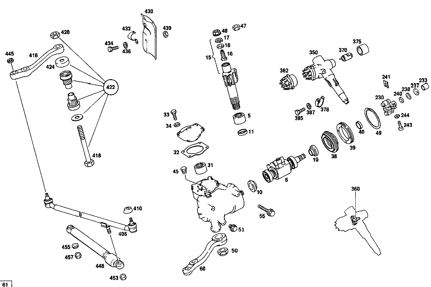

| № | Артикул | Название | Кол. | Примечание | Ограничение |
|---|---|---|---|---|---|
| 70 | A 107 460 17 01 | Рулевой механизм | 1 | [073] UP TO CHASSIS: 017 084434 114 050055 117 125697 FROM CHASSIS, SEE UNIT SPARE PARTS LIST 104 | |
| 74 | A 107 460 02 86 | - РЕЗЬБ. ПАТРОН | 1 | [402] БОЛЬШЕ НЕ ПОСТАВЛЯЕТСЯ [073] UP TO CHASSIS: 017 084434 114 050055 117 125697 FROM CHASSIS, SEE UNIT SPARE PARTS LIST 104 | |
| 86 | A 123 462 00 71 | - болт | 1 | [073] UP TO CHASSIS: 017 084434 114 050055 117 125697 FROM CHASSIS, SEE UNIT SPARE PARTS LIST 104 | |
| 89 | A 107 462 08 62 | - ШАЙБА УПОРНАЯ | 1 | ПО НЕОБХОДИМОСТИ 2.65MM [073] UP TO CHASSIS: 017 084434 114 050055 117 125697 FROM CHASSIS, SEE UNIT SPARE PARTS LIST 104 | |
| 95 | A 004 994 92 41 | - предохранитель | 1 | [073] UP TO CHASSIS: 017 084434 114 050055 117 125697 FROM CHASSIS, SEE UNIT SPARE PARTS LIST 104 | |
| 98 | A 107 462 07 62 | - Прижимная шайба | 1 | [073] UP TO CHASSIS: 017 084434 114 050055 117 125697 FROM CHASSIS, SEE UNIT SPARE PARTS LIST 104 | |
| 101 | A 094 990 57 05 | - Стопорное кольцо | 1 | [073] UP TO CHASSIS: 017 084434 114 050055 117 125697 FROM CHASSIS, SEE UNIT SPARE PARTS LIST 104 | |
| 105 | A 114 460 00 15 | - Крышка | 1 | [073] UP TO CHASSIS: 017 084434 114 050055 117 125697 FROM CHASSIS, SEE UNIT SPARE PARTS LIST 104 | |
| 106 | A 115 997 06 30 | - Резьбовая пробка | 1 | [073] UP TO CHASSIS: 017 084434 114 050055 117 125697 FROM CHASSIS, SEE UNIT SPARE PARTS LIST 104 | |
| 107 | N 915013 010001 | - Штуцер | 1 | [073] UP TO CHASSIS: 017 084434 114 050055 117 125697 FROM CHASSIS, SEE UNIT SPARE PARTS LIST 104 | |
| 108 | N 915013 006001 | - РЕЗЬБ. ШТУЦЕР | 1 | [073] UP TO CHASSIS: 017 084434 114 050055 117 125697 FROM CHASSIS, SEE UNIT SPARE PARTS LIST 104 | |
| 109 | A 001 990 54 51 | - гайка | 1 | [073] UP TO CHASSIS: 017 084434 114 050055 117 125697 FROM CHASSIS, SEE UNIT SPARE PARTS LIST 104 | |
| 110 | A 114 463 08 01 | Рулевая сошка | 1 | СМ. РИС.: 109 | |
| 120 | A 107 460 00 61 | набор уплотнений | 1 | [073] UP TO CHASSIS: 017 084434 114 050055 117 125697 FROM CHASSIS, SEE UNIT SPARE PARTS LIST 104 | |
| 125 | A 107 466 00 60 | - Уплотнительное кольцо | 1 | [073] UP TO CHASSIS: 017 084434 114 050055 117 125697 FROM CHASSIS, SEE UNIT SPARE PARTS LIST 104 | |
| 128 | A 107 466 01 60 | - Уплотнительное кольцо | 1 | [073] UP TO CHASSIS: 017 084434 114 050055 117 125697 FROM CHASSIS, SEE UNIT SPARE PARTS LIST 104 | |
| 130 | A 107 466 02 60 | - Уплотнительное кольцо | 1 | [073] UP TO CHASSIS: 017 084434 114 050055 117 125697 FROM CHASSIS, SEE UNIT SPARE PARTS LIST 104 | |
| 133 | A 000 994 98 41 | - Стопорное кольцо | 1 | [073] UP TO CHASSIS: 017 084434 114 050055 117 125697 FROM CHASSIS, SEE UNIT SPARE PARTS LIST 104 | |
| 136 | A 001 994 25 41 | - Стопорное кольцо | 1 | [073] UP TO CHASSIS: 017 084434 114 050055 117 125697 FROM CHASSIS, SEE UNIT SPARE PARTS LIST 104 | |
| 139 | A 001 994 84 41 | - Стопорное кольцо | 1 | [073] UP TO CHASSIS: 017 084434 114 050055 117 125697 FROM CHASSIS, SEE UNIT SPARE PARTS LIST 104 | |
| 142 | A 014 997 61 48 | - Уплотнительное кольцо | 1 | [073] UP TO CHASSIS: 017 084434 114 050055 117 125697 FROM CHASSIS, SEE UNIT SPARE PARTS LIST 104 | |
| 145 | A 004 997 45 45 | - УПЛОТНИТ. КОЛЬЦО | - | ||
| 145 | A 013 997 37 48 | - УПЛОТНИТ. КОЛЬЦО | 2 | [073] UP TO CHASSIS: 017 084434 114 050055 117 125697 FROM CHASSIS, SEE UNIT SPARE PARTS LIST 104 | |
| 148 | A 009 997 42 45 | - Уплотнительное кольцо | 2 | [073] UP TO CHASSIS: 017 084434 114 050055 117 125697 FROM CHASSIS, SEE UNIT SPARE PARTS LIST 104 | |
| 151 | A 009 997 43 45 | - Уплотнительное кольцо | 1 | [073] UP TO CHASSIS: 017 084434 114 050055 117 125697 FROM CHASSIS, SEE UNIT SPARE PARTS LIST 104 | |
| 153 | A 009 997 44 45 | - Уплотнительное кольцо | 1 | [073] UP TO CHASSIS: 017 084434 114 050055 117 125697 FROM CHASSIS, SEE UNIT SPARE PARTS LIST 104 | |
| 155 | A 009 997 45 45 | - Уплотнительное кольцо | 1 | [073] UP TO CHASSIS: 017 084434 114 050055 117 125697 FROM CHASSIS, SEE UNIT SPARE PARTS LIST 104 | |
| 157 | A 009 997 46 45 | - Уплотнительное кольцо | 2 | [073] UP TO CHASSIS: 017 084434 114 050055 117 125697 FROM CHASSIS, SEE UNIT SPARE PARTS LIST 104 | |
| 159 | A 009 997 47 45 | - Уплотнительное кольцо | 1 | [073] UP TO CHASSIS: 017 084434 114 050055 117 125697 FROM CHASSIS, SEE UNIT SPARE PARTS LIST 104 | |
| 161 | A 009 997 48 45 | - Уплотнительное кольцо | 1 | [073] UP TO CHASSIS: 017 084434 114 050055 117 125697 FROM CHASSIS, SEE UNIT SPARE PARTS LIST 104 | |
| 163 | A 012 997 80 47 | - УПЛОТНИТ. КОЛЬЦО | - | ||
| 163 | A 011 997 67 46 | - УПЛОТНИТ. КОЛЬЦО | 1 | [073] UP TO CHASSIS: 017 084434 114 050055 117 125697 FROM CHASSIS, SEE UNIT SPARE PARTS LIST 104 | |
| 165 | A 006 997 82 46 | - УПЛОТНИТ. КОЛЬЦО | - | ||
| 165 | A 011 997 68 46 | - УПЛОТНИТ. КОЛЬЦО | - | ||
| 165 | A 019 997 50 47 | - Уплотнительное кольцо | 1 | [073] UP TO CHASSIS: 017 084434 114 050055 117 125697 FROM CHASSIS, SEE UNIT SPARE PARTS LIST 104 | |
| 166 | A 000 997 87 20 | - Уплотнительное кольцо | 1 | [073] UP TO CHASSIS: 017 084434 114 050055 117 125697 FROM CHASSIS, SEE UNIT SPARE PARTS LIST 104 | |
| 167 | N 007603 012110 | - Уплотнительное кольцо | 1 | [073] UP TO CHASSIS: 017 084434 114 050055 117 125697 FROM CHASSIS, SEE UNIT SPARE PARTS LIST 104 | |
| 168 | N 007603 012111 | - Уплотнительное кольцо | 1 | [073] UP TO CHASSIS: 017 084434 114 050055 117 125697 FROM CHASSIS, SEE UNIT SPARE PARTS LIST 104 | |
| 169 | N 007603 016401 | - Уплотнительное кольцо | 1 | [073] UP TO CHASSIS: 017 084434 114 050055 117 125697 FROM CHASSIS, SEE UNIT SPARE PARTS LIST 104 | |
| 172 | A 107 460 00 37 | ремкомплект | 1 | [073] UP TO CHASSIS: 017 084434 114 050055 117 125697 FROM CHASSIS, SEE UNIT SPARE PARTS LIST 104 | |
| 176 | A 004 981 10 10 | - Сепаратор иг. подшипника | 2 | [402] БОЛЬШЕ НЕ ПОСТАВЛЯЕТСЯ [073] UP TO CHASSIS: 017 084434 114 050055 117 125697 FROM CHASSIS, SEE UNIT SPARE PARTS LIST 104 | |
| 179 | A 000 981 48 18 | - Сепаратор иг. подшипника | 2 | [073] UP TO CHASSIS: 017 084434 114 050055 117 125697 FROM CHASSIS, SEE UNIT SPARE PARTS LIST 104 | |
| 182 | A 000 981 49 18 | - Сепаратор иг. подшипника | 1 | [073] UP TO CHASSIS: 017 084434 114 050055 117 125697 FROM CHASSIS, SEE UNIT SPARE PARTS LIST 104 | |
| 184 | A 000 981 54 27 | - Подшипник | 1 | [073] UP TO CHASSIS: 017 084434 114 050055 117 125697 FROM CHASSIS, SEE UNIT SPARE PARTS LIST 104 | |
| 185 | A 001 990 55 40 | - Диск | 2 | [073] UP TO CHASSIS: 017 084434 114 050055 117 125697 FROM CHASSIS, SEE UNIT SPARE PARTS LIST 104 | |
| 187 | A 001 990 56 40 | - ШАЙБА | 1 | [073] UP TO CHASSIS: 017 084434 114 050055 117 125697 FROM CHASSIS, SEE UNIT SPARE PARTS LIST 104 | |
| 189 | A 001 990 62 51 | - ГАЙКА | - | ||
| 189 | A 001 990 70 51 | - гайка | - | ||
| 189 | A 000 990 40 50 | - гайка | 1 | [073] UP TO CHASSIS: 017 084434 114 050055 117 125697 FROM CHASSIS, SEE UNIT SPARE PARTS LIST 104 | |
| 198 | A 115 466 00 82 | Резиновое кольцо | 1 | ||
| 216 | A 189 236 01 71 | - БОЛТ | 1 | ||
| 216B | A 000 466 03 73 | - Стопорная шайба | 1 | ||
| 216D | A 000 236 00 55 | - Фильтр | 1 | ||
| 216F | A 000 236 00 76 | - Крышка | 1 | ||
| 216H | A 001 993 14 01 | - пружина | 1 | ||
| 216K | A 000 460 11 82 | - Крышка корпуса | 1 | ||
| 216M | A 000 236 00 80 | - Уплотнительная прокладка | 1 | ||
| 230 | A 115 460 05 10 | Муфта рулевого вала | 1 | ||
| 237 | A 111 990 30 40 | - ШАЙБА | 2 | [009] UP TO CHASSIS: 017 004786 110 408804 117 007082 | |
| 238 | N 000137 010205 | - Пружинная шайба | 2 | ||
| 240 | A 136 990 95 40 | - ШАЙБА | 2 | [009] UP TO CHASSIS: 017 004786 110 408804 117 007082 | |
| 241 | N 912002 010001 | - Механический фиксатор | 2 | [009] UP TO CHASSIS: 017 004786 110 408804 117 007082 | |
| 243 | A 111 990 04 20 | БОЛТ | 2 | ||
| 244 | N 007980 008001 | Пружинное кольцо | 2 | ||
| 249 | A 115 460 71 16 | ТРУБЧАТ. СЕКЦИЯ РУЛ. КОЛ. | 1 | ПРИВОД КП НА ЦЕНТР. КОНС. | |
| 257 | A 115 462 18 35 | Корпус подшипника | 1 | [049] FROM CHASSIS: 017 036194 114 004596 117 073525 | |
| 259 | A 000 981 89 10 | ПОДШИПНИК ИГОЛЬЧАТЫЙ | - | ||
| 259 | A 018 981 61 10 | Игольчатый подшипник | 1 | ||
| 261 | N 000912 006014 | Цилиндрич. винт | 1 | ||
| 263 | N 000137 006100 | Пружинная шайба | - | ||
| 263 | N 000137 006204 | Пружинная шайба | 4 | ||
| 265 | A 115 460 08 95 | ПАНЕЛЬ | 1 | ||
| 267 | A 115 995 05 35 | - ХОМУТ | 1 | ||
| 269 | N 000931 006159 | - Винт | 1 | ||
| 271 | N 000125 006407 | - ШАЙБА | 1 | ||
| 273 | A 094 990 68 10 | - Пружинное кольцо | 1 | ||
| 274 | N 000934 006013 | - Гайка | - | ||
| 274 | N 304032 006008 | - Шестигранная гайка | 1 | ||
| 279 | A 115 460 83 09 | ВАЛ РУЛЕВОЙ | 1 | ||
| 282 | A 116 462 00 60 | - Уплотнительное кольцо | 1 | ||
| 284 | N 000471 020000 | Стопорное кольцо | 1 | ||
| 288 | N 000625 006004 | Шарикоподшипник | 1 | ||
| 290 | A 094 990 70 05 | Стопорное кольцо | 1 | ||
| 301 | A 107 464 01 43 | Угольная щетка | 1 | ||
| 305 | A 116 460 00 03 | Рулевое колесо | 1 | [005] FROM CHASSIS: 010 118542 110 318234 | |
| 307 | N 900055 032200 | - Стопорное кольцо | 1 | ||
| 309 | A 116 464 00 25 | - Обшивка | 1 | [008] ONLY APPLICABLE TO 116 460 00 03 STEERING WHEEL | |
| 311 | A 116 464 00 17 | - Контактное кольцо | 1 | [008] ONLY APPLICABLE TO 116 460 00 03 STEERING WHEEL | |
| 313 | A 116 464 00 87 | - ОБИВКА | 1 | [008] ONLY APPLICABLE TO 116 460 00 03 STEERING WHEEL | |
| 331 | A 000 464 04 32 | Фирменный знак | 1 | [402] БОЛЬШЕ НЕ ПОСТАВЛЯЕТСЯ [008] ONLY APPLICABLE TO 116 460 00 03 STEERING WHEEL | |
| 333 | N 000137 014201 | Пружинная шайба | 1 | ||
| 335 | N 000439 014203 | Гайка | 1 | ||
| 360 | A 000 460 02 84 | - Корпус клапанов | 1 | ||
| 362 | A 116 462 00 93 | - Переключатель | 1 | ||
| 370 | A 601 460 03 04 | Замковый цилиндр | 1 | STATE KEY NO. WHEN ORDERING [032] FROM CHASSIS: 017 016520 [034] FROM CHASSIS: 117 032885 | |
| 375 | A 123 462 05 23 | Защитная втулка | 1 | [032] FROM CHASSIS: 017 016520 [034] FROM CHASSIS: 117 032885 | |
| 378 | A 115 460 03 22 | хомут | 1 | ||
| 385 | N 000931 006094 | Винт | 1 | ||
| 387 | A 094 990 68 10 | Пружинное кольцо | 1 | ||
| 389 | A 115 462 07 80 | Уплотнительная прокладка | 1 | ||
| 391 | A 000 990 27 91 | ГАЙКОДЕРЖАТЕЛЬ | - | ||
| 391 | A 000 990 22 91 | ГАЙКОДЕРЖАТЕЛЬ | 6 | [402] БОЛЬШЕ НЕ ПОСТАВЛЯЕТСЯ | |
| 393 | N 914007 006004 | Винт с неспадающей шайбой | 6 | ||
| 395 | N 000931 008244 | Винт | 2 | ||
| 397 | N 009021 008213 | Шайба | 2 | 8 MM | |
| 406 | A 114 460 03 05 | ТЯГА РУЛЕВАЯ | - | ||
| 406 | A 000 460 00 05 | Рулевая тяга | 1 | ||
| 410 | A 000 463 04 96 | - МАНЖЕТА | 2 | TO 115 460 15 05 , 114 460 02 05 [417] БОЛЬШЕ НЕ ПОСТАВЛЯЕТСЯ, ЗАКАЗЫВАТЬ КОМПЛЕКТ ПОСТАВКИ | |
| 416 | A 115 463 15 10 | Промежуточный рычаг | 1 | ||
| 418 | N 000960 016287 | Винт | 1 | [402] БОЛЬШЕ НЕ ПОСТАВЛЯЕТСЯ | |
| 420 | N 913004 016004 | Гайка | - | ||
| 420 | N 910113 016002 | Шестигранная гайка | 1 | M16 | |
| 422 | A 124 460 00 19 | РЕМКОМПЛЕКТ | - | ||
| 422 | A 126 460 08 19 | ремкомплект | 1 | РЕМКОМПЛЕКТ | |
| 424 | A 111 463 10 56 | Пылезащитный колпачок | 1 | ||
| 430 | A 115 463 01 90 | ЗАЩИТНАЯ ПАНЕЛЬ | 1 | ||
| 432 | A 115 463 03 40 | Держатель | 1 | ||
| 434 | N 000933 006102 | Винт | - | ||
| 434 | N 304017 006016 | Винт с 6-гранной головкой | 1 | M6X16 | |
| 436 | A 094 990 68 10 | Пружинное кольцо | 1 | ||
| 439 | N 000934 006007 | Гайка | 1 | ||
| 445 | A 120 990 01 55 | гайка | 2 | ||
| 448 | A 000 463 51 32 | Амортизатор | 1 | (ДЕМПФЕР РУЛ. УПРАВЛ.) | |
| 453 | N 913004 010010 | Гайка | - | ||
| 453 | N 910113 010002 | Шестигранная гайка | 1 | ||
| 455 | N 000137 010201 | Пружинная шайба | 1 | ||
| 457 | N 000936 010010 | Гайка | 1 | ||
| 475 | A 003 545 37 28 | - ШТЕКЕР | - | ||
| 475 | A 012 545 03 28 | - КОРПУС ШТЕКЕРА | - | ||
| 475 | A 009 545 56 28 | - Корпус штекера | 1 | ||
| 476 | A 004 545 87 24 | Переключатель | 1 | TEMПOMAT | |
| 477 | A 003 545 71 28 | - ШТЕКЕР | - | ||
| 477 | A 006 545 78 28 | - Корпус штекера | 1 | 6\-СЕКЦИОН.; 6\-PIN | |
| 478 | N 914025 004103 | Винт с неспадающей шайбой | 2 | ||
| 485 | A 115 462 13 96 | Манжета | 1 | ||
| 487 | A 116 462 03 96 | Крышка | 1 | ||
| A 107 466 05 83 | - ПОРШЕНЬ | 1 | [073] UP TO CHASSIS: 017 084434 114 050055 117 125697 FROM CHASSIS, SEE UNIT SPARE PARTS LIST 104 [417] БОЛЬШЕ НЕ ПОСТАВЛЯЕТСЯ, ЗАКАЗЫВАТЬ КОМПЛЕКТ ПОСТАВКИ | ||
| A 107 460 02 11 | - ВАЛ РУЛЕВОЙ | 1 | [073] UP TO CHASSIS: 017 084434 114 050055 117 125697 FROM CHASSIS, SEE UNIT SPARE PARTS LIST 104 [417] БОЛЬШЕ НЕ ПОСТАВЛЯЕТСЯ, ЗАКАЗЫВАТЬ КОМПЛЕКТ ПОСТАВКИ | ||
| A 107 462 09 62 | - Прижимная шайба | 1 | ПО НЕОБХОДИМОСТИ 2.70MM [073] UP TO CHASSIS: 017 084434 114 050055 117 125697 FROM CHASSIS, SEE UNIT SPARE PARTS LIST 104 | ||
| A 107 462 10 62 | - Прижимная шайба | 1 | ПО НЕОБХОДИМОСТИ 2.75MM [073] UP TO CHASSIS: 017 084434 114 050055 117 125697 FROM CHASSIS, SEE UNIT SPARE PARTS LIST 104 | ||
| A 107 462 11 62 | - ШАЙБА УПОРНАЯ | 1 | ПО НЕОБХОДИМОСТИ 2.80MM | ||
| A 107 462 02 62 | - Прижимная шайба | 1 | ПО НЕОБХОДИМОСТИ 2.90MM [073] UP TO CHASSIS: 017 084434 114 050055 117 125697 FROM CHASSIS, SEE UNIT SPARE PARTS LIST 104 [409] ПРИ МОНТАЖЕ ПОДОГНАТЬ ПО МЕСТУ | ||
| A 107 462 01 62 | - Прижимная шайба | 1 | ПО НЕОБХОДИМОСТИ 2.85MM [073] UP TO CHASSIS: 017 084434 114 050055 117 125697 FROM CHASSIS, SEE UNIT SPARE PARTS LIST 104 | ||
| A 107 462 02 62 | - Прижимная шайба | 1 | ПО НЕОБХОДИМОСТИ 2.90MM [073] UP TO CHASSIS: 017 084434 114 050055 117 125697 FROM CHASSIS, SEE UNIT SPARE PARTS LIST 104 | ||
| A 107 462 03 62 | - Прижимная шайба | 1 | ПО НЕОБХОДИМОСТИ 2.95MM [073] UP TO CHASSIS: 017 084434 114 050055 117 125697 FROM CHASSIS, SEE UNIT SPARE PARTS LIST 104 | ||
| A 107 462 04 62 | - Прижимная шайба | 1 | ПО НЕОБХОДИМОСТИ 3.00 MM [073] UP TO CHASSIS: 017 084434 114 050055 117 125697 FROM CHASSIS, SEE UNIT SPARE PARTS LIST 104 | ||
| A 107 462 05 62 | - Прижимная шайба | 1 | ПО НЕОБХОДИМОСТИ 3.050 MM [073] UP TO CHASSIS: 017 084434 114 050055 117 125697 FROM CHASSIS, SEE UNIT SPARE PARTS LIST 104 | ||
| A 107 462 06 62 | - Прижимная шайба | 1 | ПО НЕОБХОДИМОСТИ 3.10MM [073] UP TO CHASSIS: 017 084434 114 050055 117 125697 FROM CHASSIS, SEE UNIT SPARE PARTS LIST 104 | ||
| A 114 990 00 01 | - БОЛТ | 4 | [073] UP TO CHASSIS: 017 084434 114 050055 117 125697 FROM CHASSIS, SEE UNIT SPARE PARTS LIST 104 | ||
| A 123 990 02 01 | БОЛТ | - | M10X80 | ||
| A 201 990 08 01 | болт | 3 | 80 MM [065] FOR REPAIRS ON SIDE MEMBER ONLY | ||
| A 115 463 00 52 | Диск | 1 | |||
| A 004 994 92 41 | - предохранитель | 1 | [073] UP TO CHASSIS: 017 084434 114 050055 117 125697 FROM CHASSIS, SEE UNIT SPARE PARTS LIST 104 | ||
| A 115 997 44 82 | ШЛАНГ | 1 | |||
| A 110 995 00 65 | хомут | - | |||
| A 000 476 04 36 | Держатель шланга | 1 | |||
| A 110 995 01 65 | хомут | 1 | 19 MM | ||
| A 115 460 11 24 | ПРОВОД | 1 | [046] FROM CHASSIS: 117 071838 | ||
| A 115 460 15 24 | ПРОВОД | 1 | |||
| A 006 997 09 82 | Шланг | 1 | 80MM [046] FROM CHASSIS: 117 071838 [404] ЗАКАЗЫВАТЬ ПОГОННЫМИ МЕТРАМИ | ||
| N 916026 020001 | Хомут | 2 | 20\-27 MM | ||
| N 900288 094102 | Хомут | 1 | |||
| A 115 460 05 83 | МАСЛЯНЫЙ БАЧОК | - | [046] FROM CHASSIS: 117 071838 | ||
| A 115 460 07 83 | Масляный бак | 1 | |||
| A 115 460 00 24 | Разветвитель трубы | 1 | |||
| A 006 997 09 82 | Шланг | 1 | 430MM [046] FROM CHASSIS: 117 071838 [404] ЗАКАЗЫВАТЬ ПОГОННЫМИ МЕТРАМИ | ||
| N 916026 020001 | Хомут | 1 | 20\-27 MM | ||
| A 115 460 38 35 | Кронштейн | 1 | |||
| A 001 990 00 91 | ГАЙКОДЕРЖАТЕЛЬ | - | [403] НЕ УСТАНОВЛЕНО | ||
| A 000 990 94 91 | Гайкодержатель | 1 | |||
| N 000094 002059 | - Шплинт | 2 | 2X14 MM | ||
| A 115 460 31 16 | ТРУБЧАТ. СЕКЦИЯ РУЛ. КОЛ. | 1 | ПЕРЕКЛЮЧЕНИЕ ПЕРЕДАЧ НА РУЛЕВОМ КОЛЕСЕ | ||
| A 115 460 35 16 | Труб. секция рул. колонки | 1 | ПРИВОД КП НА ЦЕНТР. КОНС. | ||
| A 113 462 00 35 | КОРПУС ПОДШИПНИКА | - | [050] IF REPLACED ON STEERING COLUMN SHIFT,ALSO SUPPLY:2 SEAL RING 115 997 14 40 [047] 010, 110 UNTIL PRODUCTION STOP [048] UP TO CHASSIS: 017 036193 114 004595 117 073524 | ||
| A 113 462 02 35 | КОРПУС ПОДШИПНИКА | - | [050] IF REPLACED ON STEERING COLUMN SHIFT,ALSO SUPPLY:2 SEAL RING 115 997 14 40 [047] 010, 110 UNTIL PRODUCTION STOP [048] UP TO CHASSIS: 017 036193 114 004595 117 073524 | ||
| A 115 462 17 35 | КОРПУС ПОДШИПНИКА | - | [050] IF REPLACED ON STEERING COLUMN SHIFT,ALSO SUPPLY:2 SEAL RING 115 997 14 40 [047] 010, 110 UNTIL PRODUCTION STOP [048] UP TO CHASSIS: 017 036193 114 004595 117 073524 | ||
| A 116 462 00 96 | Манжета | 1 | |||
| A 116 990 01 21 | - болт | 4 | [008] ONLY APPLICABLE TO 116 460 00 03 STEERING WHEEL | ||
| A 116 993 55 01 | - ПРУЖИНА | 4 | [008] ONLY APPLICABLE TO 116 460 00 03 STEERING WHEEL | ||
| A 116 993 51 01 | - пружина | 4 | [008] ONLY APPLICABLE TO 116 460 00 03 STEERING WHEEL | ||
| A 116 464 00 50 | - втулка | 4 | [008] ONLY APPLICABLE TO 116 460 00 03 STEERING WHEEL | ||
| A 116 464 01 77 | - ЗАЩИТНОЕ КОЛЬЦО | - | |||
| A 601 990 05 40 | - Диск | 4 | [008] ONLY APPLICABLE TO 116 460 00 03 STEERING WHEEL | ||
| A 116 464 00 77 | - ЗАЩИТНОЕ КОЛЬЦО | 4 | [008] ONLY APPLICABLE TO 116 460 00 03 STEERING WHEEL | ||
| A 116 990 10 40 | - Диск | 4 | [008] ONLY APPLICABLE TO 116 460 00 03 STEERING WHEEL | ||
| A 116 464 01 87 | - ОБИВКА | - | |||
| A 116 464 00 87 | - ОБИВКА | - | [403] НЕ УСТАНОВЛЕНО | ||
| A 115 462 42 30 | Замок рулевого вала | 1 | |||
| A 000 462 93 30 | Замковый цилиндр | 1 | БЕЗ ОПРЕДЕЛЕН. ЗАКРЫТИЯ [032] FROM CHASSIS: 017 016520 [034] FROM CHASSIS: 117 032885 | ||
| A 111 462 01 75 | Диск | 6 | |||
| A 000 463 00 97 | - ШАЙБА | 2 | TO 115 460 15 05, 114 460 02 05 [417] БОЛЬШЕ НЕ ПОСТАВЛЯЕТСЯ, ЗАКАЗЫВАТЬ КОМПЛЕКТ ПОСТАВКИ [402] БОЛЬШЕ НЕ ПОСТАВЛЯЕТСЯ | ||
| A 000 330 04 85 | Ремк-т шарового шарнира | 2 | TO 114 460 03 05 | ||
| A 111 463 00 52 | РАСПОРНАЯ ШАЙБА | - | |||
| A 124 463 00 77 | Диск | 1 | |||
| A 115 463 01 52 | Дистанционная шайба | 1 | [039] ПОСЛЕДУЮЩ. УСТАНОВКА | ||
| N 000094 002120 | ШПЛИНТ | 2 | |||
| N 000127 010202 | Пружинное кольцо | 1 | |||
| N 000960 010037 | БОЛТ | 1 | |||
| N 000960 010026 | Винт | - | |||
| N 000961 010031 | Винт | - | |||
| N 308676 010023 | Винт с 6-гранной головкой | 1 | |||
| A 004 545 32 24 | Переключатель | 1 | [030] FROM CHASSIS: 110 400001 | ||
| A 004 545 76 24 | Переключатель | - | [403] НЕ УСТАНОВЛЕНО | ||
| A 004 545 75 24 | Переключатель | 1 | |||
| A 009 545 57 28 | - Крышка | 1 | TO 009 545 56 28 | ||
| N 007985 004179 | Винт | 2 | |||
| N 912004 004100 | Пружинное кольцо | 2 |
Позиций: 207 · подписано на схемах: 136 · колесо — плавный зум в курсор, перетаскивание — пан, двойной клик — зум, клик по артикулу — скопировать · наведите на строку или цифру на схеме — подсветка связки, клик — закрепить.